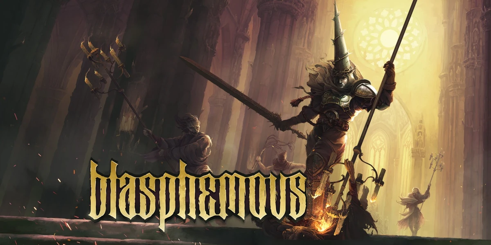

Blasphemous - tuyệt phẩm nhập vai Metroidvania đã chính thức có mặt trên iOS sau thời gian dài chờ đợi
Các game thủ iOS lại tiếp tục được đón nhận một tin vui nữa trong tháng 2 này.
Blasphemous chính thức có mặt trên iOS!
Nếu như độc giả đang tìm kiếm một tựa game nhập vai, phiêu lưu giả tưởng sở hữu các pha hành động đã mắt thì chắc chắn, Blasphemous sẽ là lựa chọn không thể bỏ qua. Thực tế, Blasphemous không còn là cái tên quá xa lạ đối với làng game quốc tế ở thời điểm hiện tại. Nguyên do là bởi kể từ lần đầu ra mắt trên PC vào năm 2019, bom tấn này đã nhanh chóng “tỏa sáng” và trở thành nguồn cảm hứng của hàng triệu game thủ trên toàn cầu.
Blasphemous là một trò chơi điện tử Metroidvania - dòng game nhập vai tập trung vào tính phi tuyến tính. Người chơi sẽ vào vai The Penitent One, một chiến binh bị mắc kẹt trong vùng đất Cvstodia đầy rẫy sự đổ nát và tội lỗi. Ở đó, game thủ sẽ phải đối đầu với những kẻ thù quái dị, các trùm khổng lồ và khám phá các bí ẩn đen tối không lời giải đáp.
Một trong những điểm sáng khiến Blasphemous được đánh giá cao chính là phong cách đồ họa pixel art đậm chất Gothic, kết hợp với thiết kế môi trường u ám, huyền bí. Cốt truyện đậm chất tôn giáo và thần thoại cũng giúp trò chơi sở hữu chiều sâu đáng kinh ngạc, đưa người chơi vào một cuộc hành trình đẫm máu nhưng không kém phần hấp dẫn.
Phiên bản iOS của Blasphemous có gì đặc biệt?
Sau thành công trên PC và console, phiên bản Blasphemous dành cho iOS không chỉ giữ nguyên được tinh thần của bản gốc mà còn được tối ưu hóa để mang lại trải nghiệm mượt mà trên màn hình cảm ứng. Với hệ thống điều khiển được tinh chỉnh hợp lý, hỗ trợ tay cầm ngoài và đồ họa sắc nét, game thủ luôn có thể tận hưởng tựa game này trọn vẹn mọi lúc mọi nơi.
Điểm trừ duy nhất mà phiên bản iOS thể hiện, chính là cơ chế hiển thị vẫn còn khá gượng gạo. Trò chơi này hiện đang được khởi chạy ở chế độ cửa sổ. Thay vì kéo dài đến tận mép trên và mép dưới của màn hình điện thoại, thì lại có một hộp đen bao quanh toàn bộ màn hình trò chơi.
Thế nhưng nhìn chung, Blasphemous vẫn đang là một lựa chọn giá trị để game thủ iOS đầu tư trải nghiệm. Nếu yêu thích dòng game Metroidvania và đang tìm kiếm một thử thách thực sự, độc giả đừng bỏ lỡ tuyệt phẩm này!